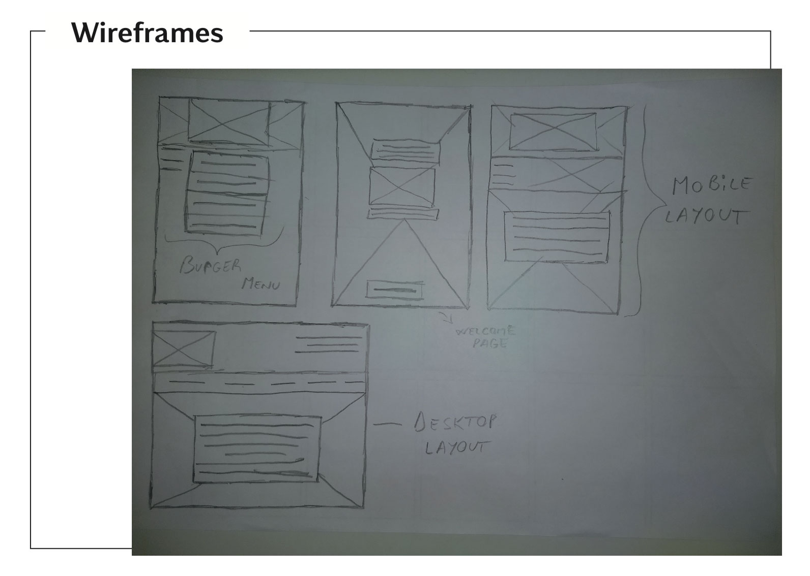

Behind
Behind
Design
We spent a lot of time analysing Gates N Fences website in order to come up with the most effective way to make this website more user friendly. Firstly, we defined the problems.
After the analysis, we had to define the framework of redesign. We created many different layouts for this task to determine the best functionality.
